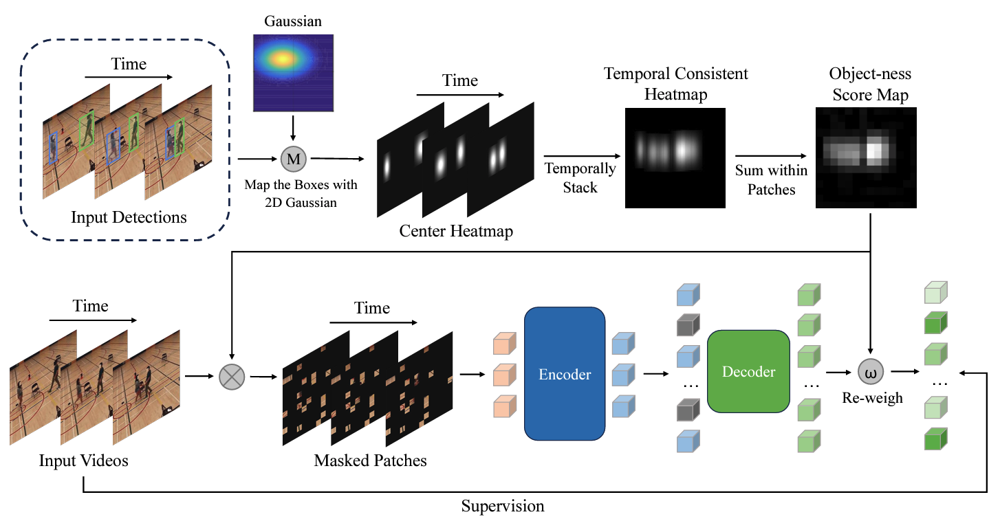
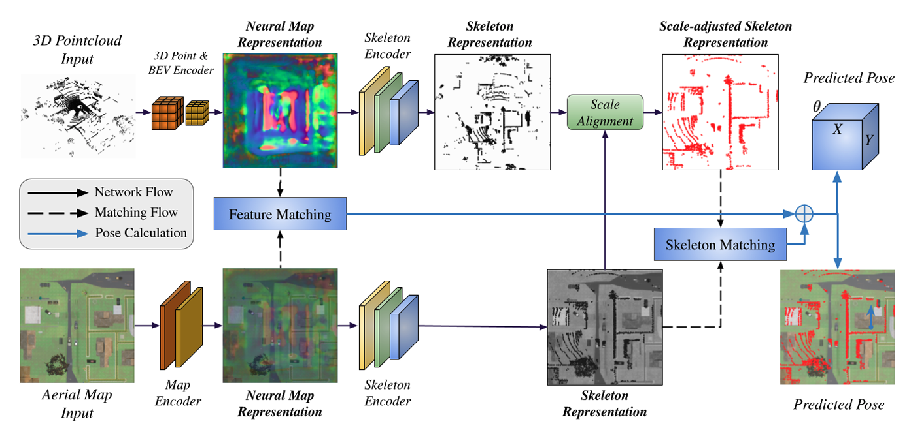
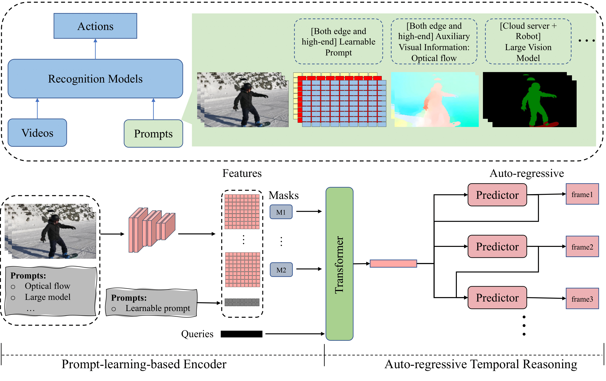
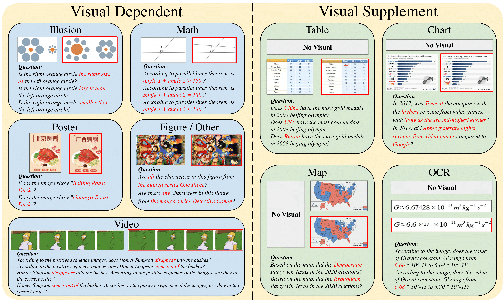
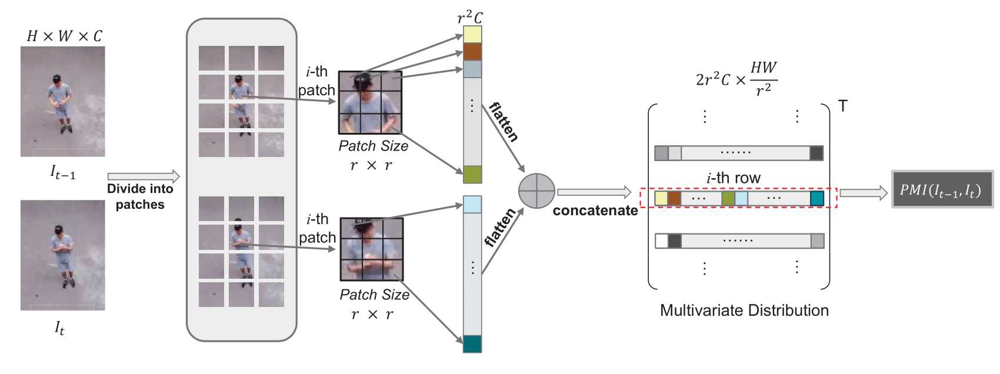
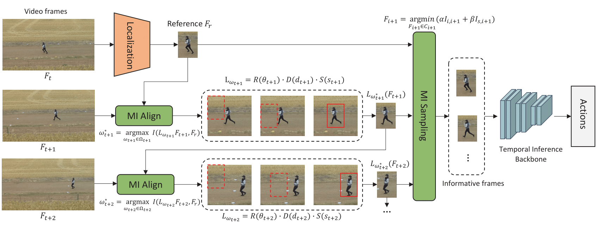
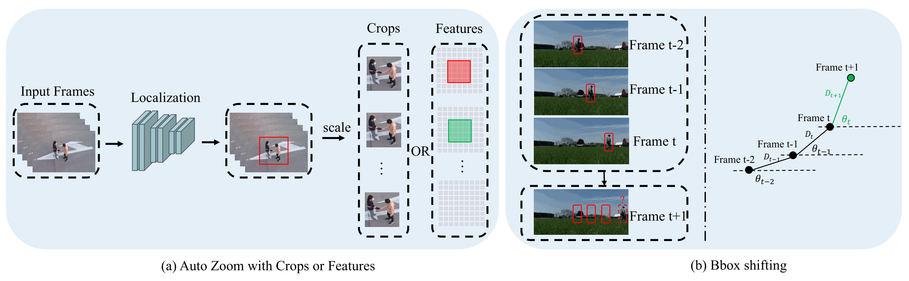

|
Ruiqi Xian (先睿奇)
I'm a Fourth-year PhD in Electrical and Computer Engineering at the University of Maryland College Park, where I am involved in advanced research under the guidance of Dr. Dinesh Manocha at the GAMMA Lab. My primary focus lies in the realms of computer vision and robotics, with a specialization in video processing and understanding.
Currently, I am working on perception problems from videos captrued by Unmanned Aerial Vehicles(UAVs). Although my research is primarily centered on aerial scene perception, I am also very interested in topics related to Video Foundation Models and Self-Supervised Learning.
Email /
CV /
Scholar /
Twitter /
Github
|
|
News
- (Sep 2024) SOAR is on Arxiv!
- (Aug 2024) Finished my internship at NEC Lab!
- (June 2024) PLAR and AGL-Net have been accepted to IROS 2024!
- (March 2024) HallusionBench has been accepted to CVPR2024!
- (OCT 2023) MITFAS and PMI Sampler have been accepted to WACV 2024!
- (Jan 2023) AZTR has been accepted to ICRA 2023!
|
|

|
SOAR: Self-supervision Optimized UAV Action Recognition with Efficient Object-Aware Pretraining
Ruiqi Xian,
Xiyang Wu, Tianrui Guan, Xijun Wang, Boqing Gong, Dinesh Manocha
Arxiv
A novel Self-supervised pretraining algorithm for aerial footage captured by Unmanned Aerial Vehicles (UAVs)
|
|

|
AGL-NET: Aerial-Ground Cross-Modal Global Localization with Varying Scales
Ruiqi Xian*,
Tianrui Guan*, Xijun Wang, Xiyang Wu, Mohamed Elnoor, Daeun Song, Dinesh Manocha
IROS 2024
A novel learning-based method for global localization using LiDAR point clouds and satellite maps
|
|

|
PLAR: Prompt Learning for Action Recognition
Ruiqi Xian*,
Xijun Wang*,
Tianrui Guan, Dinesh Manocha
IROS 2024
A novel action recognition approach that leverages the strengths of prompt learning to optimize the learning process.
|
|

|
HallusionBench: An Advanced Diagnostic Suite for Entangled Language Hallucination & Visual Illusion in Large Vision-Language Models
Tianrui Guan*, Fuxiao Liu*, Xiyang Wu, Ruiqi Xian, Zongxia Li, Xiaoyu Liu, Xijun Wang, Lichang Chen, Furong Huang, Yaser Yacoob, Dinesh Manocha, Tianyi Zhou
CVPR 2024
An comprehensive benchmark designed for the evaluation of image-context reasoning, which presents significant challenges to advanced large visual-language models (LVLMs), such as GPT-4V(Vision) and LLaVA-1.5, by emphasizing nuanced understanding and interpretation of visual data.
|
|

|
PMI Sampler: Patch Similarity Guided Frame Selection for Aerial Action Recognition
Ruiqi Xian,
Xijun Wang, Divya Kothandaraman, Dinesh Manocha
WACV 2024
A frame selection strategy utilizes the motion bias within videos via patch-wise similarity, enabling the selection of motion-salient frames with dynamic background.
|
|

|
MITFAS: Mutual Information based Temporal Feature Alignment and Sampling for Aerial Video Action Recognition
Ruiqi Xian*,
Xijun Wang, Dinesh Manocha
WACV 2024
A novel alignment and sampling approach that roots in information theory to handle the viewpoint changes caused by the UAV ego-motions.
|
|

|
AZTR: Aerial Video Action Recognition with Auto Zoom and Temporal Reasoning
Ruiqi Xian*, Xijun Wang*, Tianrui Guan, Celso M. de Melo, Stephen M. Nogar, Aniket Bera, Dinesh Manocha
ICRA 2023
A learning-based approach that can be implemented and evaluated both on the desktop with high-end GPUs and on the low power Platforms for robots and drones.
|
|